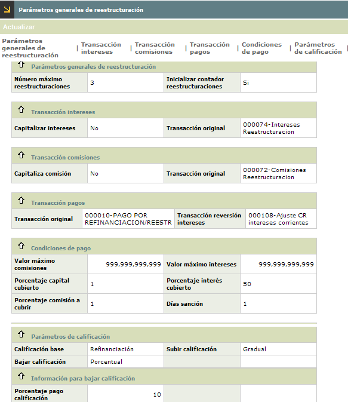

Parámetros de reestructuración |
Mediante esta función se definen todos los conceptos concernientes a la reestructuración de créditos, los cuales permitirán realizar dichas tareas como la entidad lo requiera.
Reestructuración La reestructuración de créditos es un mecanismo que poseen las entidades para normalizar los créditos de algún cliente que en un determinado momento y por diferentes circunstancias no haya podido cumplir con la obligación contraída con la misma; en este espacio se definen los lineamientos a tener en cuenta en relación con la reestructuración de dichos créditos.
El formulario cuenta con la opción Actualizar.

Actualizar: A través de esta opción, el sistema muestra el siguiente formulario con todos los campos modificables. Adicionalmente, cuenta con un enlace que permite Ir a p�gina 2 >> del formulario de actualización.
Número
máximo reestructuraciones |
En este campo numérico de 3 posiciones, obligatorio, se define la cantidad límite de veces que se puede reestructurar un crédito durante la vigencia del mismo. |
Iniciar contador de reestructuraciones |
Campo que permite reiniciar el conteo de reestructuraciones de las obligaciones. |
Capitalizar intereses |
En este espacio se define la manera como se manejarán los intereses correspondientes a la deuda objeto de reestructuración. Se debe marcar si los intereses que posee la deuda harán parte o no del saldo del nuevo crédito luego de efectuada la reestructuración. |
Transacción original |
Este campo sólo se despliega al seleccionar la opción No capitaliza intereses (en el campo anterior) y en él se debe definir la transacción bajo la cual se identificará dicho registro, por medio de la lista de valores poblada de la opción orígenes de transacciones (internas) del núcleo. |
Capitaliza comisión |
Campo que permite definir la manera como se manejarán las comisiones correspondientes a la deuda objeto de reestructuración. Se debe marcar si las comisiones que posee la deuda harán parte o no del saldo del nuevo crédito luego de efectuada la reestructuración. |
Transacción original |
Campo que sólo se despliega al seleccionar la opción No capitaliza comisión y en él se debe definir la transacción bajo la cual se identificará dicho registro, por medio de la lista de valores poblada de la opción orígenes de transacciones (internas) del núcleo. |
Transacción pago |
Contiene el código de la transacción automática de abono por reestructuración una vez se realice la transacción y el código de la transacción de Reversión automática de intereses en el caso de que aplique. A través de una lista de valores poblada en la opción transacciones por empresa, se define aquella con la cual se identificará el pago que realice el cliente bajo el concepto de reestructuración. |
Transacción reversión |
Campo que despliega una lista de valores poblada de la opción orígenes de transacciones (internas) del núcleo. Permite seleccionar la transacción de reversión de intereses en el caso de que aplique. |
Valor máximo comisiones |
Campo numérico de 18 posiciones, no obligatorio, en el cual se define el valor máximo por este concepto que puede tener acumulado un cliente para efectuar la reestructuración. |
Valor máximo intereses |
En este campo numérico de 18 posiciones, no obligatorio, se define el valor máximo por este concepto que puede tener acumulado un cliente para efectuar la reestructuración. |
Porcentaje capital cubierto |
Campo numérico de 9 posiciones, no obligatorio, en el cual se registra la proporción de capital de la deuda que como mínimo debe cubrir un cliente a través del pago para que ésta sea normalizada. |
Porcentaje interés cubierto |
En este campo numérico de 9 posiciones, no obligatorio, se registra la proporción de intereses corrientes, moratorios y/o extracontables de la deuda que como mínimo debe cubrir un cliente a través del pago para que ésta sea normalizada. |
Porcentaje
comisión a cubrir |
Campo numérico de 9 posiciones, no obligatorio, en el cual se registra la proporción de comisiones, que hacen parte de la deuda y que como mínimo debe cubrir un cliente a través del pago para que ésta sea normalizada. |
Días sanción |
En este campo numérico de 4 posiciones, no obligatorio, se indica el número de días de plazo que tiene el cliente para cumplir con el compromiso adquirido, después de realizado el acuerdo de pago, para que efectivamente este se pueda realizar la normalización de su crédito. |
Calificación base |
Campo que posee lista de valores adjunta de la que puede seleccionar entre Periodo anterior o Refinanciación la calificación que se toma como referente para variar la misma acorde al tratamiento de pagos dado por el deudor a la obligación. |
Subir calificación |
Este campo cuenta con lista de valores adjunta de la que puede seleccionar entre Original o Gradual y se refiere a la calificación que debe asignarse a la obligación acorde al tratamiento de pagos dado por el deudor a la obligación. |
Bajar calificación |
Campo que posee lista de valores adjunta de la que puede seleccionar entre Porcentual, Rangos o Gradual; y que dependiendo de la opción seleccionada despliega respectivamente los campos Porcentaje pago calificación, Cuotas a cubrir, Número cuotas a cubrir Bajar, o Número altura de mora a bajar, permitiendo al sistema bajar o minimizar la calificación de riesgo de la deuda, acorde al tratamiento de pagos dado por el deudor a la obligación. |

Número cuotas a cubrir / Número altura de mora a bajar
|
En este conjunto de campos se deben relacionar la cantidad de cuotas o instalamentos que el cliente debe cubrir para que la calificación de riesgo de su deuda baje “n” alturas. Estos campos son de una posición ya que las calificaciones son de la A a la E, es por esto que el número de calificaciones que se pueden bajar deberá estar entre 1 y 5. |
Porcentaje pago calificación
|
Campo numérico, excluyente, en el cual se indica la proporción de deuda que debe cubrir el pago que realice el cliente para que su crédito sea evaluado con una categoría de riesgo menor. |
Cuotas a cubrir
|
En este campo excluyente se indica el número mínimo de cuotas que debe cubrir el cliente para que su crédito sea evaluado con una categoría de riesgo menor. |